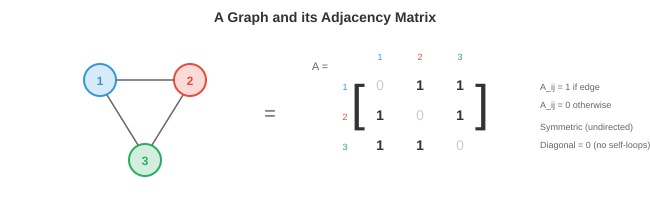

图论¶
图论为描述实体间关系提供了数学语言。本章涵盖节点、边、邻接矩阵、图类型、度和连通性、图拉普拉斯算子、谱图理论以及现实世界的图应用。我们将在纯计算机科学章节中更深入地讨论图
-
到目前为止，本书中的数据都存在于规则结构上：\(\mathbb{R}^n\) 中的向量（第1章）、数字网格形式的矩阵（第2章）、像素网格形式的图像（第8章）、有序列表形式的序列（第7章）。但许多现实世界的系统是不规则的：社交网络没有网格结构，分子没有从左到右的顺序，道路网络也不能整齐地平铺成行和列。
-
图（Graph） 是表示这些不规则关系结构的数学工具。图捕获了实体（节点）及它们之间的关系（边）。一旦数据被表示为图，我们就可以应用文件1中的几何深度学习原理来从中学习。
节点、边和邻接¶
-
一个图 \(G = (V, E)\) 由一组节点（或顶点）\(V = \{v_1, v_2, \ldots, v_n\}\) 和一组连接节点对的边 \(E \subseteq V \times V\) 组成。
-
节点代表实体：人、原子、城市、网页、神经元。边代表关系：友谊、化学键、道路、超链接、突触。
-
邻接矩阵 \(A\) 是图的矩阵表示。对于一个有 \(n\) 个节点的图，\(A\) 是一个 \(n \times n\) 矩阵，其中如果存在从节点 \(i\) 到节点 \(j\) 的边，则 \(A_{ij} = 1\)，否则 \(A_{ij} = 0\)。
-
例如，一个三角形图（3个节点，全部相连）：

-
对角线为零，因为节点默认不与自身相连（无自环）。邻接矩阵是我们在第2章中研究的布尔矩阵的直接应用：每个条目都是一个二元关系。
-
邻接矩阵完整地编码了图的结构。对 \(A\) 的矩阵运算揭示了图的性质：\(A^2_{ij}\) 计算节点 \(i\) 和 \(j\) 之间长度为2的路径数量（回顾第2章中的矩阵乘法：每个条目是经过中间节点的乘积之和）。更一般地，\(A^k_{ij}\) 计算长度为 \(k\) 的路径数量。
-
每个节点可以携带一个特征向量 \(\mathbf{x}_i \in \mathbb{R}^d\)。对于社交网络，这可能是用户的个人信息。对于分子，它编码原子类型、电荷和其他属性。全部节点特征的集合是一个矩阵 \(X \in \mathbb{R}^{n \times d}\)，其中每一行是一个节点的特征。
-
边也可以携带特征：分子中的键类型、空间图中的距离、知识图谱中的关系类型。边 \((i, j)\) 的边特征是一个向量 \(\mathbf{e}_{ij} \in \mathbb{R}^{d_e}\)。
图类型¶
-
无向图具有对称的边：如果 \(i\) 连接到 \(j\)，则 \(j\) 也连接到 \(i\)。邻接矩阵是对称的：\(A = A^T\)（一个对称矩阵，见第2章）。友谊和化学键是无向的。
-
有向图（digraph）具有带方向的边：从 \(i\) 到 \(j\) 的边不意味着从 \(j\) 到 \(i\) 的边。邻接矩阵是非对称的。Twitter关注、网页超链接和引文网络是有向的。
-
加权图为每条边分配一个数值权重。邻接矩阵具有实数值而非二进制值：\(A_{ij} = w_{ij}\)。道路网络中的距离、大脑连通性中的相关强度以及社交网络中的交互频率是加权的。
-
二分图具有两个不相交的节点集合，边只存在于集合之间（集合内部没有边）。用户和产品构成一个二分图：用户评价产品，但用户之间不相互评价。二分图的邻接矩阵具有块结构：
-
其中 \(B\) 是两个节点集之间的二分邻接矩阵。
-
多重图允许同一对节点之间存在多条边和/或自环。知识图谱通常是多重图：两个实体之间可以有多种关系（例如"出生于"、"居住于"、"工作于"）。
-
超图将边推广为一次连接两个以上节点。一条超边连接一组节点，表示高阶关系。一篇由五人合著的研究论文是一条连接五个作者节点的超边。
-
完全图 \(K_n\) 在每一对节点之间都有边。这是全连接层的图类比，也是Transformer操作的结构（每个标记关注每个其他标记）。
度、路径和连通性¶
-
一个节点的度是与它相连的边的数量。在无向图中，节点 \(i\) 的度为 \(d_i = \sum_j A_{ij}\)。高度节点是拥有大量连接的"枢纽"。
-
度矩阵 \(D\) 是一个对角线元素为度的对角矩阵：\(D_{ii} = d_i\)。这个矩阵出现在整个图论和GNN公式中。
-
两个节点之间的路径是连接它们的边序列。\(i\) 和 \(j\) 之间的最短路径（或测地线）是边数最少（或在加权图中总权重最小）的路径。迪杰斯特拉算法（Dijkstra's algorithm）在 \(O((|V| + |E|) \log |V|)\) 时间内找到最短路径。
-
如果每对节点之间都存在路径，则图是连通的。否则，图有多个连通分量：相互之间没有边的孤立子图。
-
图的直径是任意一对节点之间最长最短路径的长度。它衡量图"分散"的程度。社交网络以直径小而闻名（"六度分隔"）。
-
环是起点和终点在同一节点的路径。没有环的图是树。树是最简单的连通图：\(n\) 个节点和恰好 \(n-1\) 条边。
-
中心性衡量节点的重要性。度中心性就是度数。介数中心性计算通过一个节点的最短路径数量。特征向量中心性根据节点邻居的重要性分配重要性，得到特征向量方程 \(A\mathbf{x} = \lambda \mathbf{x}\)（第2章）。谷歌的PageRank是特征向量中心性在有向图上的变体。
图拉普拉斯算子¶
- 图拉普拉斯算子也许是图论中最重要的矩阵。定义如下：
- 其中 \(D\) 是度矩阵，\(A\) 是邻接矩阵。对于我们的三角形示例：
-
拉普拉斯算子具有显著的性质：
- 它始终是对称的且半正定的（回顾第2章：所有特征值 \(\geq 0\)）。对于任意向量 \(\mathbf{x}\)：

- 这个二次形式度量图上的信号 $\mathbf{x}$ 在边上的变化程度。如果相邻节点值相近，则 $\mathbf{x}^T L \mathbf{x}$ 较小。如果它们差异很大，则较大。拉普拉斯算子度量图上信号的**平滑度**。
- 最小特征值始终为0，特征向量为 $\mathbf{1} = [1, 1, \ldots, 1]^T$（常数信号没有变化）。零特征值的数量等于连通分量的数量。
- 第二小特征值 $\lambda_2$ 是**代数连通度**（Fiedler值）。它衡量图的连通程度：$\lambda_2 = 0$ 表示图不连通，大的 $\lambda_2$ 表示图紧密连通。
- 归一化拉普拉斯算子通过度进行缩放：
- 这种归一化确保拉普拉斯算子的性质不依赖于节点度的绝对尺度。项 \(D^{-1/2} A D^{-1/2}\) 是对称归一化邻接矩阵，它直接出现在GCN公式中（文件3）。
谱图理论¶
-
图拉普拉斯算子的特征值和特征向量定义了图的谱，它们充当图上的傅里叶变换的类似物。
-
在经典信号处理中，傅里叶变换将信号分解为频率分量（正弦和余弦）。在图上，拉普拉斯算子的特征向量扮演这些频率基的角色。小特征值的特征向量在图上变化缓慢（低频、平滑），而大特征值的特征向量变化迅速（高频、振荡）。
-
信号 \(\mathbf{x}\) 在图上的图傅里叶变换（GFT） 为：
-
其中 \(U\) 是拉普拉斯算子特征向量的矩阵（回顾第2章中的特征分解：\(L = U \Lambda U^T\)）。逆变换为 \(\mathbf{x} = U \hat{\mathbf{x}}\)。
-
谱域中的图卷积是频域中的逐点乘法，正如空间域中的卷积对应于傅里叶域中的乘法（卷积定理，见第8章）：
-
滤波器 \(\hat{g}_\theta\) 是特征值的可学习函数。这是谱域GNN的基础，我们将在文件3中将其简化为实用的GCN。
-
计算瓶颈是对 \(L\) 进行特征分解，对于有 \(n\) 个节点的图需要 \(O(n^3)\) 时间。这对于大型图（数百万节点）是不可行的。多项式近似（切比雪夫多项式）完全避免了特征分解，而这种近似直接导致了GCN。
社区检测¶
-
许多现实世界的图具有社区结构：紧密连接的节点簇，簇之间连接稀疏。社交网络有好友群组，生物网络有功能模块，引文网络有研究领域。
-
谱聚类使用拉普拉斯算子特征向量来寻找社区。思路：使用 \(L\) 的 \(k\) 个最小的非平凡特征向量对每个节点进行嵌入，然后在这个嵌入空间中应用k-means（第6章）。同一社区中的节点在谱嵌入中最终彼此靠近。
-
这是可行的，因为Fiedler向量（\(\lambda_2\) 的特征向量）自然地将图分成两组：正值的节点和负值的节点，沿着最稀疏的连接切开。更高的特征向量进一步细分为更多组。
-
模块度 \(Q\) 衡量社区划分的质量。它将社区内边的数量与随机图中的期望数量进行比较：
- 其中 \(c_i\) 是节点 \(i\) 的社区分配，如果节点在同一个社区则 \(\delta\) 为1。\(Q\) 的范围从 \(-0.5\) 到 \(1\)，值越高表示社区结构越强。
现实世界中的图¶
-
社交网络：节点是人，边是友谊或互动。Facebook有数十亿节点和数千亿条边。这些图通常是稀疏的（每个人有几百个朋友，而不是几十亿），具有小世界性质（短的平均路径长度），以及重尾度分布（少数拥有数百万连接的枢纽节点）。
-
分子图：节点是原子，边是化学键。每个原子有特征（元素类型、电荷、杂化方式），每条键有特征（单键、双键、三键、芳香键）。分子图很小（数十到数百个节点）但高度结构化。从图结构预测分子性质是GNN的一个重要应用。
-
知识图谱：节点是实体（人、地点、概念），边是类型化的关系（"出生于"、"首都是"、"是……的实例"）。知识图谱为搜索引擎、推荐系统和问答系统提供支持。它们通常是具有数百万实体和数十亿关系的有多重图。
-
引文网络：节点是论文，边是引用（有向的）。聚类揭示研究社区。节点特征包括标题、摘要和出版年份。
-
蛋白质相互作用网络：节点是蛋白质，边表示物理相互作用或功能关联。理解这些图有助于识别药物靶点和疾病机制。
-
道路网络与交通：节点是交叉路口，边是具有距离/时间权重的道路段。这些图上的最短路径算法为导航系统提供动力。自动驾驶运动预测（第11章）将智能体交互表示为图。
编程任务（使用CoLab或notebook）¶
-
构建一个小型图的邻接矩阵，计算基本性质：每个节点的度、长度为2的路径数量以及图是否连通。
import jax.numpy as jnp # 一个简单图：5个节点 # 0-1, 0-2, 1-2, 2-3, 3-4 A = jnp.array([[0, 1, 1, 0, 0], [1, 0, 1, 0, 0], [1, 1, 0, 1, 0], [0, 0, 1, 0, 1], [0, 0, 0, 1, 0]], dtype=float) # 度 degrees = A.sum(axis=1) print(f"度数: {degrees}") # 长度为2的路径 A2 = A @ A print(f"长度为2的路径（节点0到3）: {int(A2[0, 3])}") # 是否连通？检查 A^(n-1) 是否所有条目非零 An = jnp.linalg.matrix_power(A + jnp.eye(5), 4) # (A+I)^4 用于可达性 connected = jnp.all(An > 0) print(f"连通: {connected}") -
计算图拉普拉斯算子及其特征值。验证最小特征值为0且对应的特征向量为常数。
import jax.numpy as jnp A = jnp.array([[0, 1, 1, 0, 0], [1, 0, 1, 0, 0], [1, 1, 0, 1, 0], [0, 0, 1, 0, 1], [0, 0, 0, 1, 0]], dtype=float) D = jnp.diag(A.sum(axis=1)) L = D - A eigenvalues, eigenvectors = jnp.linalg.eigh(L) print(f"特征值: {eigenvalues}") print(f"最小特征向量: {eigenvectors[:, 0]}") print(f"Fiedler值（代数连通度）: {eigenvalues[1]:.4f}") # 验证: x^T L x 度量平滑度 x = jnp.array([1.0, 1.0, 1.0, -1.0, -1.0]) # 两个组 smoothness = x @ L @ x print(f"两组信号的平滑度: {smoothness:.2f}") -
对具有两个社区的图执行谱聚类。使用Fiedler向量嵌入节点，并按符号分离。
import jax.numpy as jnp import matplotlib.pyplot as plt # 两个社区，各5个节点，弱连接 A = jnp.zeros((10, 10)) # 社区1：节点0-4（密集） for i in range(5): for j in range(i+1, 5): A = A.at[i, j].set(1).at[j, i].set(1) # 社区2：节点5-9（密集） for i in range(5, 10): for j in range(i+1, 10): A = A.at[i, j].set(1).at[j, i].set(1) # 一条桥接边 A = A.at[2, 7].set(1).at[7, 2].set(1) D = jnp.diag(A.sum(axis=1)) L = D - A eigenvalues, eigenvectors = jnp.linalg.eigh(L) # Fiedler向量（第二小特征值） fiedler = eigenvectors[:, 1] communities = (fiedler > 0).astype(int) print(f"Fiedler向量: {fiedler}") print(f"聚类: {communities}") plt.bar(range(10), fiedler, color=["#3498db" if c == 0 else "#e74c3c" for c in communities]) plt.xlabel("节点"); plt.ylabel("Fiedler向量值") plt.title("通过Fiedler向量进行谱聚类") plt.show()